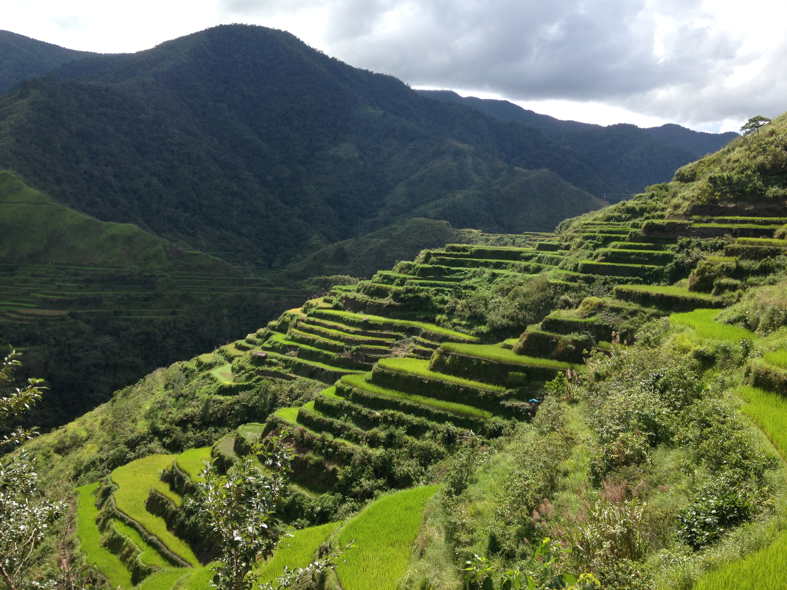

One to five days...
Travel along ancient rice terraces
Stay in local villages
Explore native customs and food

Jody Kimmayong, Guide
Jody has been giving tours of the Ifugao region for 7 years. A native of the Ifugao, from Banaue, he has a deep understanding of the history and culture of the area. Your tour will take you from village to village, accross ancient rice terraces. You will stay at family guesthouses, with traditional food and drink. Jody will arrange all transportation and accomodations for the trip.